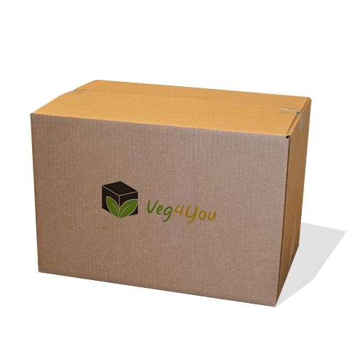

Pesquisa fechada
-
80% São Vegano/vegetariano ou conhecem alguém que seja
-
52% tem engajamento total ou interesse
-
66% Gostaria de receber produtos veganos em casa
-
73% Ja experenciou ou viu alguem com dificuldades para encontrar produtos veganos
-
8% Da população Brasileira são veganos, segundo o IBGE. Dados de 2012, equivalia a mais ou menos 15 milhões de pessoas.
Proplema!
Dificuldade para encontrar esses produtos!
O que somos
A VEG4YOU é clube de assinaturas com 3 temas, alimentos(Snacks), higiene pessoal, cosméticos, tudo voltado ao universo Veg
